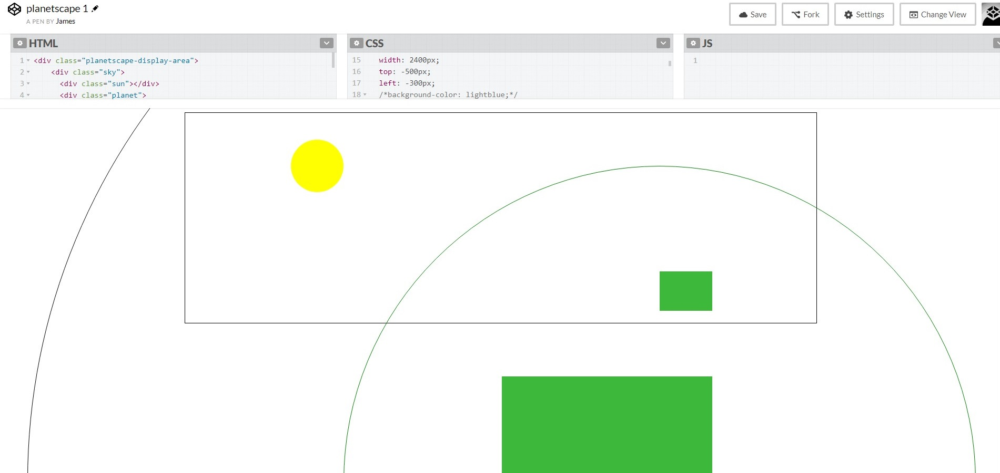
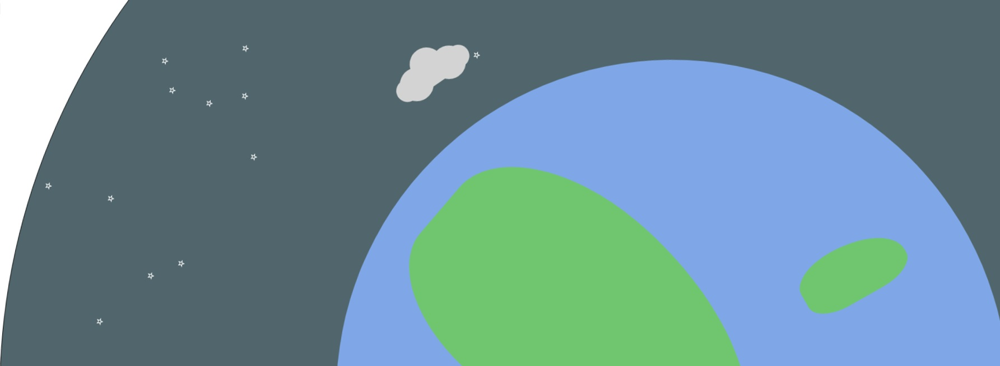

I needed something for my portfolio page header. Using a stock image of a laptop and a cup of coffee neatly arranged on a wooden desk seemed a bit clichéd, and didn’t really reflect much of me. So I decided I wanted to make something.
Animating things in CSS always reminds me of building animations in powerpoint when I was a kid, and those always gravitated (heh) towards space themes. It wasn’t long before I had a picture of a rotating planetscape for my header. But how to make it happen?
For the sky we have a large circular div, with the planet as a smaller circle within. By absolutely positioning this circle far to one side and hiding the overflow of the view port, we can create the illusion of a window on to a planetscape.
So, I want some stars for my nightscape. Ideally, I’d like a lot of stars. Creating a star is simple enough, I only have to define one and reuse the element over and over. But how to lay them out? Absolutely positioning a hundred elements sounds pretty tedious, so time for some Javascript!
I know I want them to inhabit the lower side of my sky sphere. All I need to do is work out the coordinate range I want them to be created in, set up a loop to create the number of stars I want and have them appended to the sky sphere within that range.
//random star coordinate generator
function starCoord(min, max) {
return Math.floor(Math.random() * (max - min + 1) + min);
}
//populate stars
for (var i = 0; i < 50; i++) {
var x = starCoord(480, 960);
var y = starCoord(240, 960);
$(".sky").append("<div class="star' style='top: " + x + "px; left: " + y + "px; z-index: 1'>☆</div>")
}
Of course part of the planet is going to be in this range as well, but adjusting the z-index of the stars prevents them from showing up where they’re not wanted.
The continents are three divs with irregular border radii, arranged so that something is always visible in the view port.
The animation is simple enough, all we have to do is spin the main sky div. To simulate the day night cycle, we set the background colour at the 50% keyframe to black, so we will transition to night and back to day within one complete cycle. By sorting out the range for the stars in the previous step, we ensure they only move into the view area during the night time.
.spin {
animation: spin 20s linear infinite;
}
@keyframes spin {
50% {
background-color: black;
}
100% {
transform: rotate(360deg);
background-color: lightblue;
}
}
It was important to make the whole thing responsive, so I created 3 different stylesheets which the users device can access via media queries.
Finally, I added a slight opacity to the view port, to make it less vivid and cartoonish.